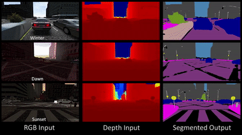
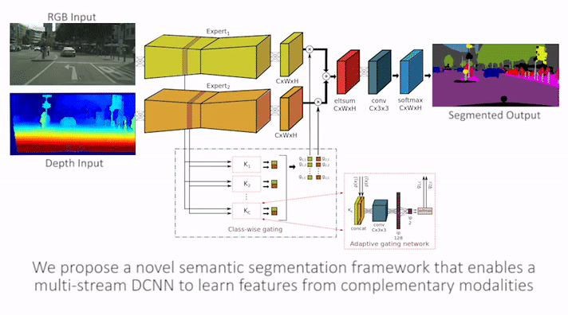
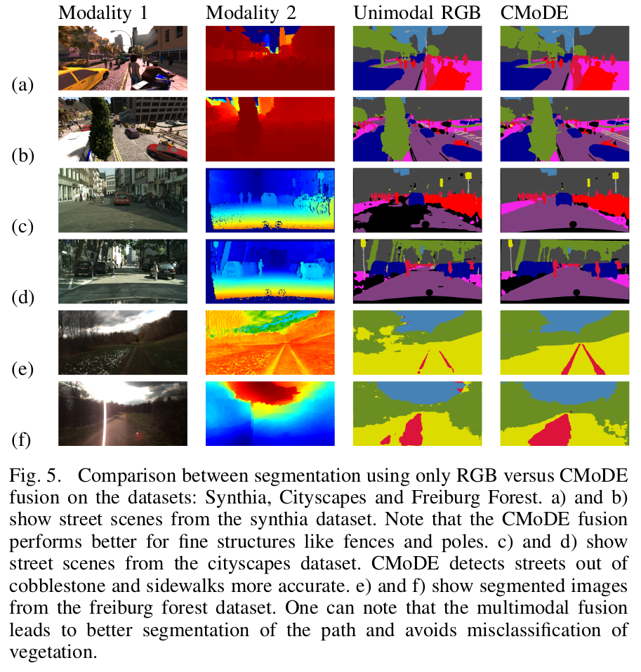
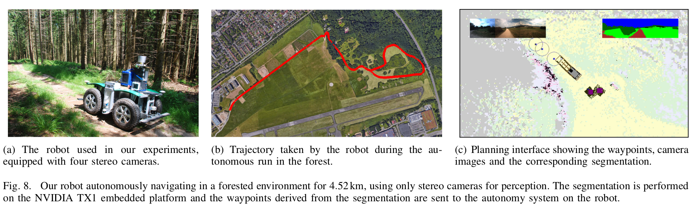
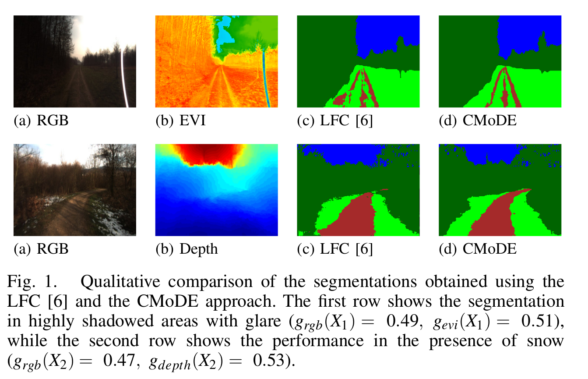
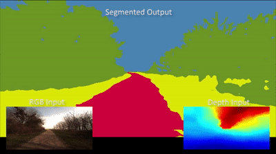
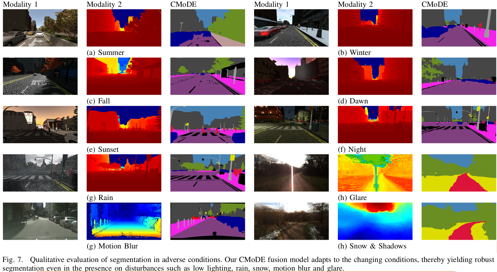

Robust Semantic Segmentation

The work was done in collaboration at Prof. Wolfram Burgard’s Autonomous Intelligent Systems, University of Freiburg with Abhinav Valada.
The project involves designing an innovative learnable mechanism to perform robust semantic segmentation in adverse conditions. The model learns how to dynamically weigh different modalities and trust them based on their quality resulting in improved segmentation. We also perform experiments on an autonomous car robot, Viona to drive in forested terrain based only on the perception input of the proposed CNN model.
AdapNet


Code and Data
The code is available on GitHub and the multi-modal semantic segmentation image dataset used can be found here. The project demo can be found here.

Videos and Demos
AdapNet: Adaptive Semantic Segmentation in Adverse Environmental Conditions
Performance on Cityscapes dataset
Off-road autonomous driving experiments

CMoDE



Code and Data
The code is available on GitHub and the multi-modal semantic segmentation image dataset used can be found here. The official project page can be found here.
Publications

AdapNet: Adaptive Semantic Segmentation in Adverse Environmental Conditions
IEEE International Conference on Robotics and Automation, Singapore 2017